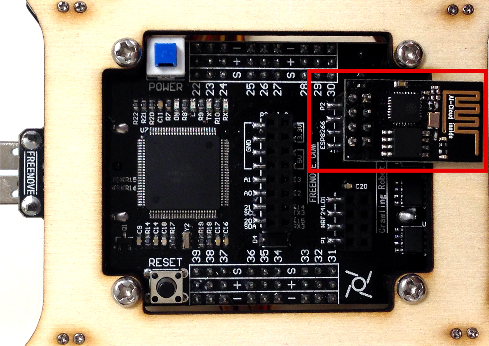

Assembly of the robot
Begin by assembling the 4 disc steering arms (white discs) on the central plate, the discs will then be fixed on the axes of the robot motors:
- Rotate disc steering arm so that its holes can aligned with the holes in the acrylic plate.
- Assemble with the M1.2x7 screws using the Phillips screwdriver
- Proceed in the same way for the 3 other discs at the 3 other angles of the plate
Repeat the operation for the 4 arms: there are 2 discs per arm, so it is necessary to assemble 8 discs.
Note the orientation of the disc: the support of the servomotor shaft must be towards the outside.
The plywood is a rather soft material: do not tighten too hard!
Assemble the servomotors on the legs:
- Position the servomotor with the cable upwards
- Assemble with 2 M2x10 screws and 2 M2 nuts using the Phillips screwdriver and key.
- Repeat for the other 3 legs of the robot paying attention to their position: you must have 2 sets of 2 symmetrical legs.
Use your finger or a clamp to hold the nut when screwing. Check the orientation of the leg before screwing in the servo motor.
Assemble 2 servomotors on each 3D printed support:
- Use 1 M2x10 screws and 1 M2 nut for the first motor
- Use 2 M2x10 screws and 2 M2 nuts for the second motor
- Repeat for the other 3 supports, check the positions of the servo motors before screwing them in


Refer to the following picture for the position of the servo motors:
Screw the small spacers onto the center plate:
- The spacers must be on the same side as the discs (see picture below)
- Use 4 M3x8 screws to screw the 4 spacers
Place the controller on the small spacers and then screw the large spacers with the key. Do not over tighten!
Make sure that the USB cable is unplugged from the controller and the batteries are removed, then cable the servo motors:
- Use ports 22-27 and 34-39, port numbers are shown on the top of the controller (opposite side to connectors)
- Scrupulously observe the polarity of the servo motors: The yellow wire must be on the S, the red wire on the +, the black (or brown) wire on the -, the connectors also have a color code allowing you to locate yourself..
- For the moment there is no connection order: you can connect the servomotors to any port from 22 to 27 and from 34 to 39, they will be configured in a second time

Controller seen from above: ports to be used, and seen from below: wiring of the servomotors, the yellow wire towards the inside
Install the two batteries according to their polarity
Then turn on the controller
The servo motors will now be in their original position: wait until they have completed their cycle before proceeding to the next steps. Do not take too long to carry out them, as the battery may be discharged (the motors must remain on)
Assemble with the screws the actuators mounted on the support in 3D printing on the plate: refer to the following pictures for their positions.
Top view: note the orientation of the servo axes
Bottom view: note the orientation of the servo axes
Note the position of the rectangular leg of the part in 3D printing: this should always be in line with the axis of the disc.
Be careful not to turn the servo motors: you risk losing their positioning.
Place the robot on a flat surface and then assemble the 4 arms as horizontally as possible. Be careful not to turn the servo motors: you risk losing their positioning.
If the arms are not totally horizontal this is not disturbing at the moment: their deviation will be compensated during the calibration of the robot.
Turn the robot over, then assemble the legs perpendicular to the arms.
In the same way as for the arms if the legs are not totally perpendicular their deviation will be compensated during the calibration of the robot.
Turn off the robot and then carefully disconnect all the servomotors, you will wire them in their final configuration according to the following diagram:
The port numbers are written on the front of the controller, scrupulously observing the connection polarity of the servomotors: the yellow wire must always be on the side of the batteries.
Group the cables of each leg in groups of 3, then wrap the spiral tube around the three cables. Allow sufficient length to prevent movement of legs
Use 4 M3x8 screws to secure the bottom plate to the large spacers
Be sure to insert each part in 3D printing in their pivot.
Attach the ESP8266 module to the controller
The assembly of the robot is finished, you will now calibrate it.